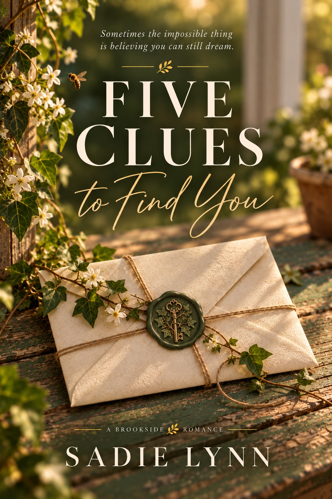

The Books
Meet the characters, explore their worlds, and find your next favorite story.
Browse the BooksA U T H O R
Stories about the people who find their way into our hearts and refuse to leave.
A little romance, a little chaos, and characters who might just feel like old friends.
Meet the characters, explore their worlds, and find your next favorite story.
Browse the BooksThe person behind the pages, the stories, and all those wonderfully complicated characters.
Get to Know MeBook news, reader-only goodies, behind-the-scenes stories, and a little glimpse into the beautifully chaotic world of writing.
Pull Up a ChairNew stories, familiar feelings, and a few surprises along the way.

Sometimes finding your way forward means rediscovering the person you've always been.
Five clues. One unexpected journey. And a love story that might have been waiting all along.
Coming Spring 2027I'm a storyteller, a chronic overthinker, and someone who has never quite mastered the art of creating a character without becoming emotionally invested in their entire existence.
I write about people. The complicated ones. The stubborn ones. The ones who make mistakes, carry old hurts, love a little too hard, and occasionally need someone to remind them that they're allowed to be happy, too.
My stories travel through different places, lives, and corners of the world. Some are full of small-town charm, others have a little more city in their bones. There are love stories, second chances, unexpected connections, and people who are still figuring out who they're supposed to be.
But no matter where a story takes me, it always comes back to the characters.
I want you to laugh with them, hurt for them, get frustrated with them, and fall a little in love with the people they become. I want them to feel familiar, like old friends you haven't seen in a while but somehow pick right back up with.
And if you finish one of my books wishing you could spend another afternoon with the characters, well... that means I've done my job.
Outside of writing, life is its own beautifully disorganized adventure. There's family, a little chaos, approximately seventeen things happening at once, and usually a story trying to get my attention when I'm supposed to be doing something else.
I wouldn't have it any other way. Most days. 😉
I'm a firm believer that humor can make the hard things a little easier, that imperfect people can have extraordinary love stories, and that sometimes the best things in life arrive when you least expect them.
So, whether you've been reading my books for years or just wandered into my little corner of the world, I'm glad you're here.
There's always room for another story.
♡Bonus scenes, hidden moments, and special treats for readers.
Readers, bookstores, and fellow book lovers are always welcome.